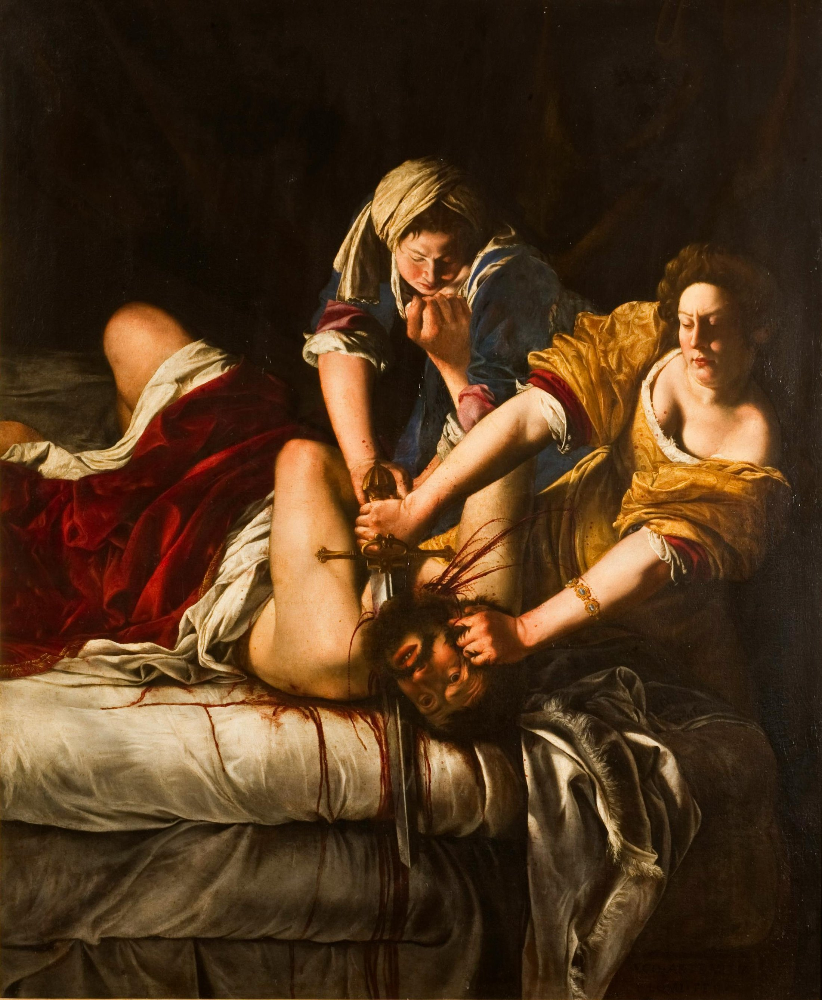

Judith cuts down from the right, the maidservant presses from the left, and Holofernes drives outward. Hands, blade, and neck form a mechanical knot—not a detail. The bed meets the frame; blackness removes retreat.
Muted ochre and indigo separate the women. Carmine echoes from blanket to cuffs to blood. Near-black compresses the gamut; linen leaps forward through value contrast.
Warm grays soften skin; angular highlights make gold silk crackle; the blade contracts into a cold, hard strip. Blood crosses an arm and descends with the sheet: red acquires speed, direction, gravity, and time.
Fact: Artemisia Gentileschi (1593–1652/53) was a major seventeenth-century painter and the first woman admitted to Florence's Academy of Art and Design. Painted around 1620, the work depicts Judith saving her city by killing its besieging commander.
Reading: A single biographical “revenge” explanation narrows the painting. Its immediate power comes from presenting the women as collaborators in action, not poses offered to a viewer.
Artemisia Gentileschi, Judith Beheading Holofernes, c. 1620, oil on canvas, 146.5 × 108 cm, inventory 1890 no. 1567. Object facts and source image: Uffizi Galleries object page; public-domain status cross-checked on Wikimedia Commons. The underlying work is in the public domain; digital-image terms may depend on source and jurisdiction. Image rights belong to the original creator and relevant rights holders. Appreciation is original analysis by Daily Art.